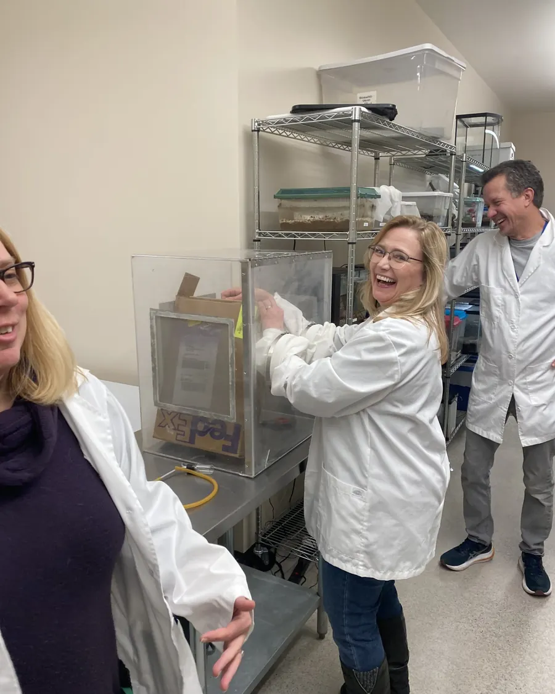
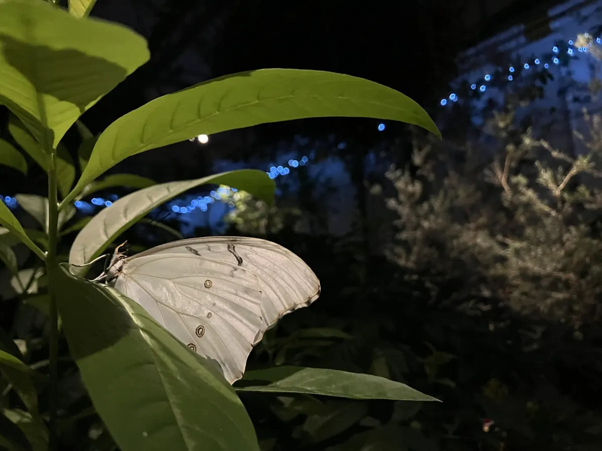

Home / About
Our metamorphosis
Founded in 2009 by bug enthusiasts determined to bring a butterfly house to Missoula. Nearly fifteen years later, they did.

From bug ambassadors to a butterfly house
Our mission is to inspire an appreciation and understanding of insects and their relatives.
We envision generations ignited by lifelong curiosity and awe for the natural world.

The MarLee Butterfly House and Insectarium
The lead gift for the capital campaign came from Kate Supplee, who chose to dedicate the facility as the MarLee Butterfly House and Insectarium. Look for the dedication by the admissions desk, and the slight hint of a rainbow, a nod to her parents, Ted and Corrine.
The building is dedicated in honor and in memory of founders Jen and Glenn Marangelo, whose vision, passion and determination made it happen, and of Ted and Corrine Supplee, whose shared love of adventure and wonder for the world, especially for all things that take flight, lives on here.
Our values
Transformative
Engaging individuals to better understand and appreciate arthropods.
Welcoming
Providing a fun, respectful, and inviting learning atmosphere for all.
Integrity
Dedication to excellence and intellectual honesty through ethical and transparent conduct.
Passionate
Sharing a love for the natural world and some of its smallest creatures through teaching and exploration.
Knowledgeable
Embedded in science, we are lifelong learners continuing to expand on our expertise to share accurate and current information.
Inspirational
Creating a sense of awe and a desire to learn more.
Collaborative
Working in partnership with other individuals, organizations, and institutions to provide the best possible learning experience.